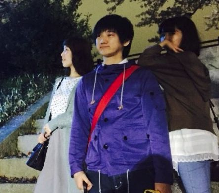

- 松尾 朋美（Matuo Tomomi）
パート：Guitar＆リーダー
- 髙澤 勇貴（Takazawa Yuki）
パート：Vocal & Bsse
- 大永 美優（Oonaga Miyu）
パート：Drums
PROFILE
小・中・高校と別々の学校に通っていた松尾朋美と大永美優が2012年04月01日、Hoken Gakariを結成。
ユニット名は、2人の共通点が小学校１年生の時に保険室で絆創膏を貼る「保険係」をしていたことによる。
結成後は地元の大阪・京都や環状線沿線でカバー曲を中心に路上ライブ活動を始める。
2012年06月01日、大永美優の彼氏の髙澤勇貴がHoken Gakariの路上ライブにいきなり飛び入り参加。
小さな頃から歌うことに興味を抱いていた髙澤は、そのままの勢いで加入、こうしてHoken Gakariは3人となった。
髙澤という強力なボーカルを得てHoken Gakariは地元の大阪・京都を中心に精力的に活動し、
ライブハウスやホールでのワンマンをソールドアウトするようになってゆく。
そして2014年09月10日、「雨上がりの桜」でメジャーデビュー。「雨上がりの桜」はCMソングに使用され問い合わせが殺到。
フリーライブを行い、5000人というショッピングモールとしては異例であり驚異的な集客を達成。
11月、石川優子とチャゲの名曲「ふたりの愛ランド」をカバーし、配信限定リリース。
2015年3月14日、初となる全国ツアー、『Hoken Gakariの みなさん、こんにつあー!! 2015 ～FUN! FUN! FANFARE!～』（全26公演・25万人動員予定）をスタート。
BIOGRAPHY - LIVE TOUR
「Hoken Gakariの みなさん、こんにつあー!! 2015 〜 I 〜 」
2013/09/01 大阪城ホール（大阪）
2014/09/10 横浜アリーナ（神奈川）
2014/09/11 横浜アリーナ（神奈川）
2014/09/15 宮城セキスイハイムスーパーアリーナ（宮城）
2014/16 宮城セキスイハイムスーパーアリーナ（宮城）
2014/09/28 大阪城ホール（大阪）
2014/09/29 大阪城ホール（大阪）
2014/10/05 マリンメッセ福岡（福岡）
2014/10/06 マリンメッセ福岡（福岡）
2014/10/12 真駒内セキスイハイムアイスアリーナ（北海道）
2014/10/13 真駒内セキスイハイムアイスアリーナ（北海道）
2014/10/19 愛媛県武道館（愛媛）
2014/20 愛媛県武道館（愛媛）
2014/10/26 広島グリーンアリーナ（広島）
2014/10/27 広島グリーンアリーナ（広島）
2014/11/09 神戸ワールド記念ホール（兵庫）
2014/10 神戸ワールド記念ホール（兵庫）
2014/11/16 静岡エコパアリーナ（静岡）
2014/11/17 静岡エコパアリーナ（静岡）
2014/11/22 日本武道館（東京）
2014/11/23 日本武道館（東京）
2014/02/27 日本ガイシホール（愛知）
2014/02/28 日本ガイシホール（愛知）
2014/03/07 三重県営サンアリーナ（三重）
2014/03/08 三重県営サンアリーナ（三重）
2015/4/05 大阪城ホール（大阪）
2015/4/06 大阪城ホール（大阪）
＜全国13カ所、25公演＞